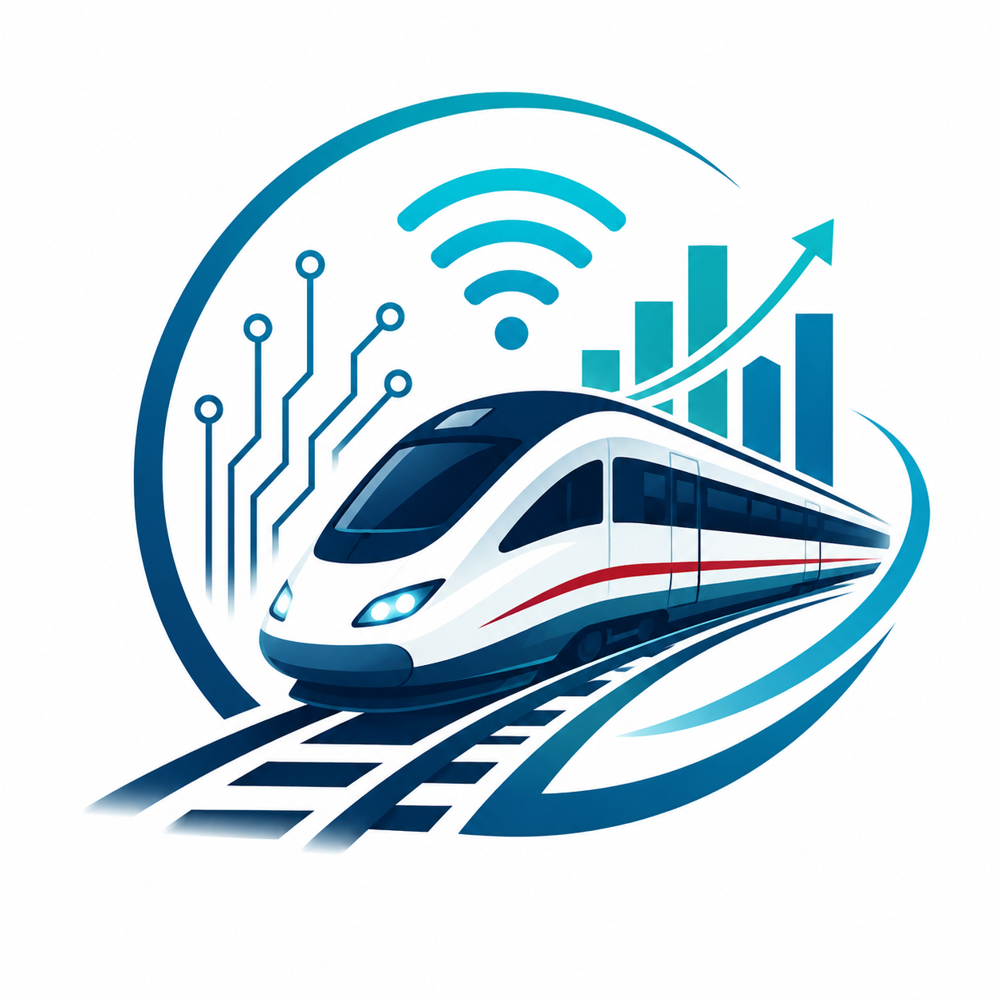

К 2030 году технологии Интернета вещей станут важнейшей частью железнодорожной инфраструктуры России.
Интеллектуальные датчики позволят заранее выявлять неисправности оборудования и предотвращать аварии.
Использование больших данных и искусственного интеллекта повысит безопасность, эффективность перевозок и качество обслуживания пассажиров.
Интернет вещей, искусственный интеллект и большие данные формируют будущее железнодорожного транспорта России.